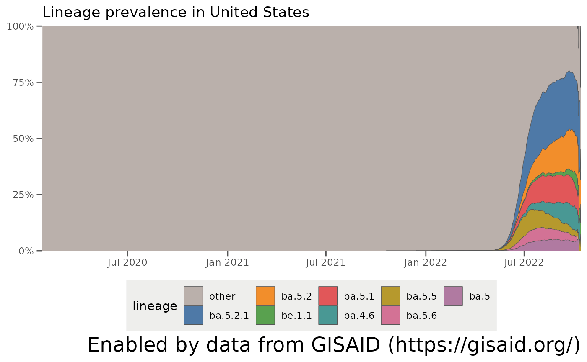
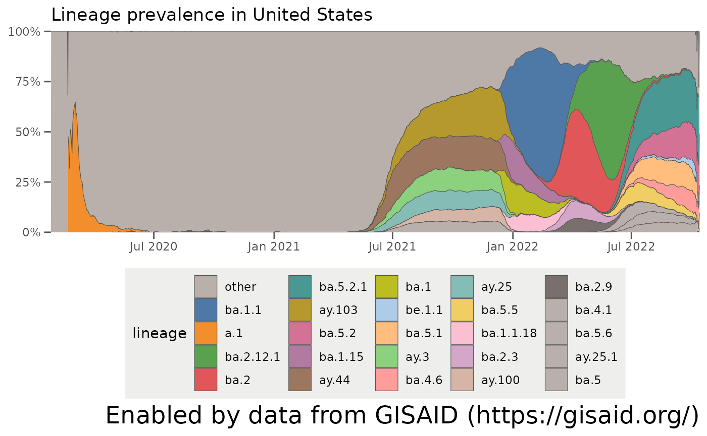
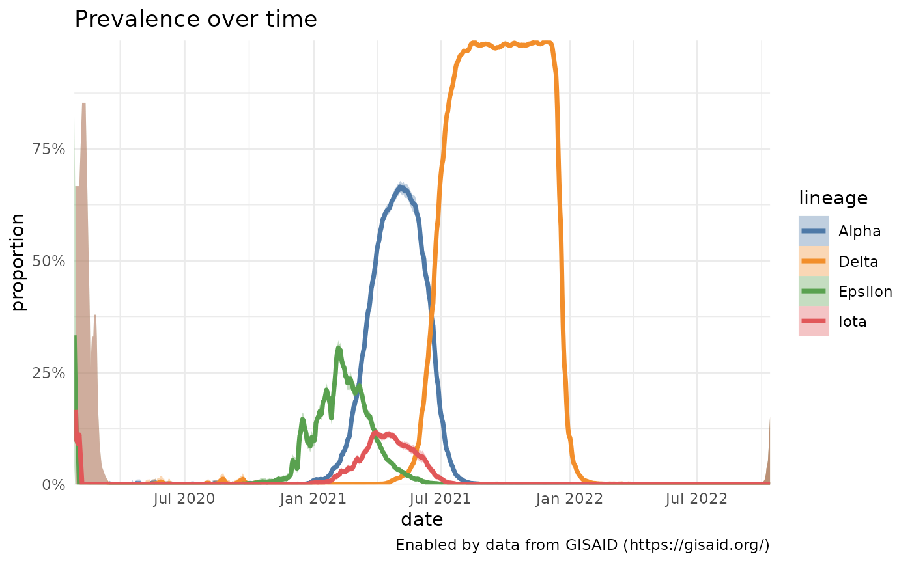
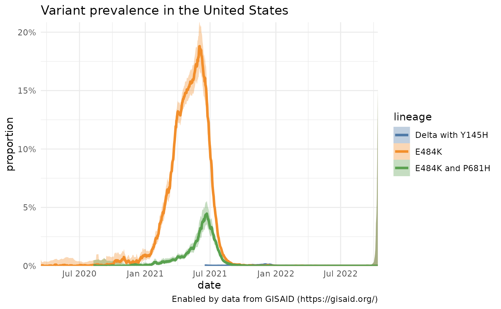
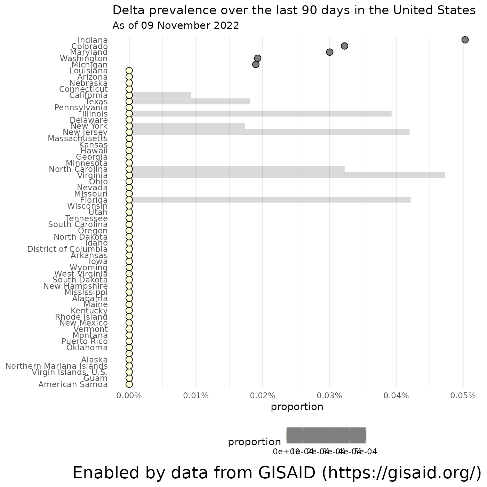
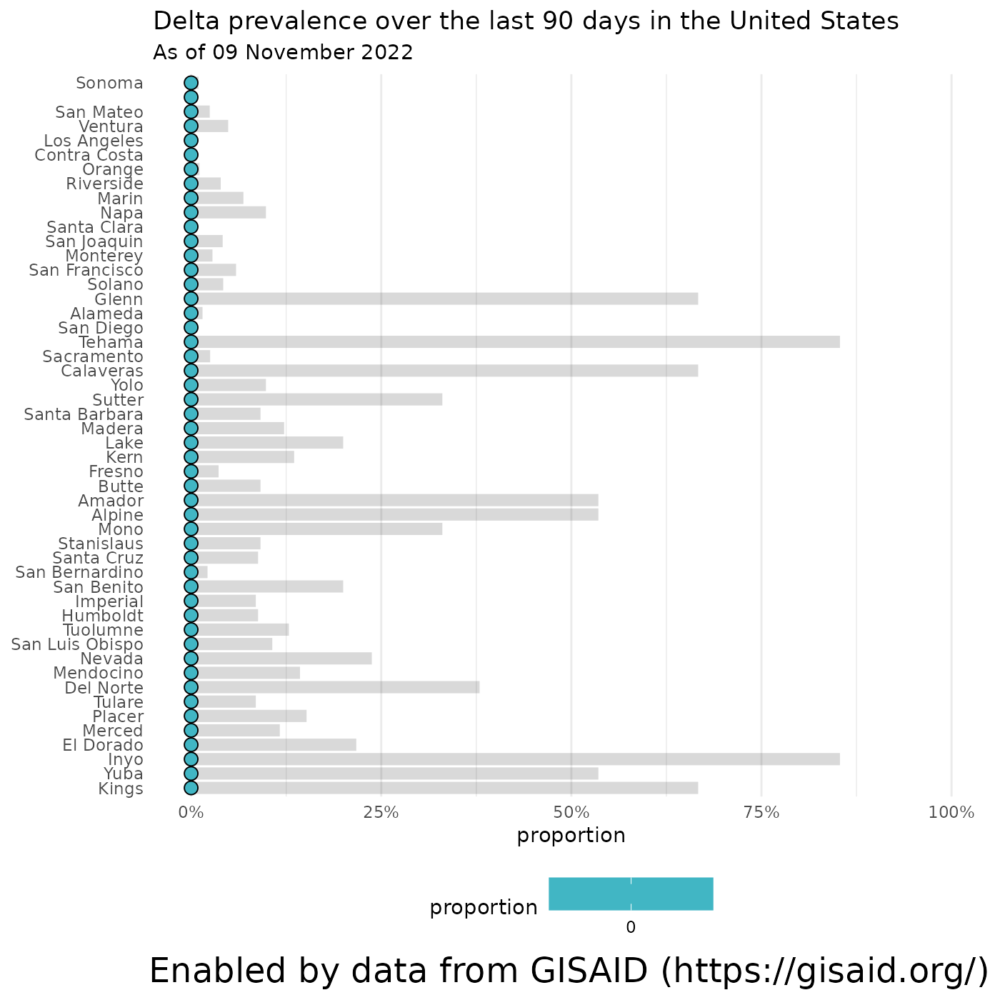

Accessing the data in outbreak.info’s Location Tracker
outbreak.info’s Location Tracker allows you to explore what lineages are currently circulating within a particular country, state/province, or U.S. county. These reports also allow you to compare the prevalence of variants within that location, including Variants of Concern. Here, we’ll show you how to pull the data from these reports and recreate the visualizations on the United States Variant Report.
Before we start…
Import the packages we’ll use and provide our GISAID credentials to access the data. If you don’t have a GISAID account, you can register for one on their website. It may take a day or two for the account to become active.
## Warning: replacing previous import 'jsonlite::flatten' by 'purrr::flatten' when
## loading 'outbreakinfo'## Warning: replacing previous import 'ggplot2::%+%' by 'crayon::%+%' when loading
## 'outbreakinfo'
# Authenticate yourself using your GISAID credentials.
authenticateUser()What lineages are circulating within the location?
Accessing the data: prevalence of all circulating lineages in the U.S.
To be able to discover which lineages are currently circulating around the U.S., let’s grab the prevalence of all the lineages in the U.S. over the past 60 days.
locationName = "United States"
usa_60d = getAllLineagesByLocation(location = locationName, other_threshold = 0.03, nday_threshold = 5, ndays = 60)## Rows: 2,791
## Columns: 6
## $ date <date> 2020-01-26, 2020-01-27, 2020-01-28, 2020-01-29, 20…
## $ total_count <int> 3, 1, 2, 4, 0, 1, 0, 1, 0, 0, 0, 1, 0, 1, 0, 1, 1, …
## $ lineage_count <int> 3, 1, 2, 4, 0, 1, 0, 1, 0, 0, 0, 1, 0, 1, 0, 1, 1, …
## $ lineage <chr> "other", "other", "other", "other", "other", "other…
## $ prevalence <dbl> 1, 1, 1, 1, 0, 1, 0, 1, 0, 0, 0, 1, 0, 1, 0, 1, 1, …
## $ prevalence_rolling <dbl> 1, 1, 1, 1, 1, 1, 1, 1, 1, 1, 1, 1, 1, 1, 1, 1, 1, …You can get explanations of each of the variables by looking at the data dictionary (outbreakinfo::genomicsDataDictionary()). Let’s look at how prevalent each of the different Pango lineages are in the U.S.:
usa_60d %>%
filter(lineage != "other") %>%
group_by(lineage) %>%
summarise(min_prevalence = min(prevalence_rolling),
max_prevalence = max(prevalence_rolling)) %>%
arrange(desc(max_prevalence)) %>%
kable()| lineage | min_prevalence | max_prevalence |
|---|---|---|
| ba.2.12.1 | 0 | 0.6749271 |
| ba.2 | 0 | 0.4540270 |
| ba.5 | 0 | 0.2244898 |
| ba.4 | 0 | 0.1156069 |
| ba.2.3 | 0 | 0.0960133 |
| ba.2.9 | 0 | 0.0724280 |
Plotting the breakdown of lineages in the U.S. over time
That gives an idea of what the range of prevalences for the lineages are, but not how they have changed over time. It’s easier to see this temporal behavior with a streamgraph which plots the relative prevalence of all the lineages over time. plotAllLineagesByLocation replicates these plots on outbreak.info:
plotAllLineagesByLocation(locationName, other_threshold = 0.03, nday_threshold = 5, ndays = 60)## Retrieving data...
## Plotting data...
Modifying the parameters to group lineages into the Other category
One thing that pops out is that there’s a big group of lineages which are grouped into an “other” category. As of October 2021, there are over 800 separate Pango lineages which have been found in the U.S. – way too many to plot . The parameters in getAllLineagesByLocation and plotAllLineagesByLocation group the smaller lineages into this “other” category. Let’s break down how these parameters work:
-
other_thresholdis the minimum prevalence threshold for the lineage not to be grouped into “other” -
nday_thresholdis the number of days which that threshold must be met not to be grouped into “other” -
ndaysis the window before the current date where to look to group lineages into “other”
… so for the example we ran before, we grouped all lineages which did not have a prevalence of at least 3% (other_threshold = 0.03) in at least 5 days (nday_threshold = 5) over the last 60 days (ndays = 60). If we want to look at more historic data, we can adjust these parameters. Let’s change the window to the last year (ndays = 365) and find all lineages which had a prevalence of at least 5% (other_threshold = 0.05) in 5 days (nday_threshold = 5) in that year. We can also make sure certain lineages, like A.1 which was circulating early on in the pandemic, are not grouped into the “other” category by specifying other_exclude = "a.1".
It’s easy then to see the trends over the last year – the North American lineages B.1 and B.1.2 appearing in 2020, the emergence of the California variants (B.1.427/B.1.429/Epsilon) and the New York variant (B.1.526/Iota) in early 2021, the rise of B.1.1.7/Alpha in the Spring of 2021, and Delta (B.1.617.2 + AY-lineages) outcompeting all lineages in summer 2021:
plotAllLineagesByLocation(locationName, other_threshold = 0.05, nday_threshold = 5, ndays = 365, other_exclude = "a.1")## Retrieving data...
## Plotting data...
Remember: these are just estimates
One essential thing to note is that while these streamgraphs are great for looking at the breakdown of lineages within a location over time, they’re rubbish at showing the uncertainty associated with these estimates. In particular, the estimates of how much lineage is in a location recently tends to be more unreliable, just because not as many samples have been sequenced lately. We’ll plot that in the next section. There are also other sources of bias that are harder to estimate, but you should bear in mind when you’re looking at any prevalence plots of variants.
Comparing the prevalence of specific lineages within a location
Accessing the data: prevalence of particular variants over time in the U.S.
To get a better idea of how uncertain the estimates of variant prevalence are, and also to look at the prevalence of variants that aren’t high in prevalence at the moment, we can calculate the prevalence of variants over time with a 95% confidence interval. To view how these data change, we can also use the plotting function plot to replicate the visualization on outbreak.info. Let’s look at the growth and decline of Alpha / B.1.1.7, Episilon / B.1.427 / B.1.429, Iota / B.1.526, and how Delta/B.1.617.2 overtakes them in the Spring of 2021:
# The WHO lineages are a Pango lineage with all its sublineages.
# Using `lookupSublineages`, we can lookup all the sublineages associated with the WHO designated sequence, according to the most recent classifications from the Pango team.
alpha_lineages = lookupSublineages("Alpha", returnQueryString = TRUE)
epsilon_lineages = lookupSublineages("Epsilon", returnQueryString = TRUE)
iota_lineages = lookupSublineages("Iota", returnQueryString = TRUE)
delta_lineages = lookupSublineages("Delta", returnQueryString = TRUE)
# create a label dictionary to rename the lineages by their WHO name:
# If you don't do this, the lineage will be labeled as a really long name of all the Pango lineages like "B.1.617.2 OR AY.1 OR AY.2 ...)"
who_labels = c("Alpha", "Epsilon", "Iota", "Delta")
names(who_labels) = c(alpha_lineages, epsilon_lineages, iota_lineages, delta_lineages)
who_prevalence = getPrevalence(pangolin_lineage = c(alpha_lineages, epsilon_lineages, iota_lineages, delta_lineages), location = locationName)## Retrieving data...
## Retrieving data...
## Retrieving data...
## Retrieving data...## Rows: 3,377
## Columns: 10
## $ date <date> 2020-03-15, 2020-03-16, 2020-03-17, 2020-03-18,…
## $ total_count <int> 999, 933, 770, 828, 684, 593, 459, 383, 626, 720…
## $ lineage_count <int> 5, 0, 0, 0, 1, 0, 0, 0, 0, 0, 0, 0, 0, 0, 0, 0, …
## $ total_count_rolling <dbl> 440.4286, 546.2857, 629.1429, 713.1429, 756.4286…
## $ lineage_count_rolling <dbl> 0.7142857, 0.7142857, 0.7142857, 0.7142857, 0.85…
## $ proportion <dbl> 0.0016217970, 0.0013075314, 0.0011353315, 0.0010…
## $ proportion_ci_lower <dbl> 2.453313e-04, 1.976857e-04, 1.715919e-04, 1.5137…
## $ proportion_ci_upper <dbl> 0.010572943, 0.008528162, 0.007406556, 0.0065365…
## $ lineage <chr> "B.1.1.7 OR Q.1 OR Q.2 OR Q.3 OR Q.4 OR Q.5 OR Q…
## $ location <chr> "United States", "United States", "United States…Plotting specific variants over time
plotPrevalenceOverTime(who_prevalence, labelDictionary = who_labels)
More advanced options: specifying variants that aren’t lineages
It’s easy to gather the prevalence over time for a specific Pango lineage, or a group of Pango lineages, like the ones that make up WHO Variants of Concern and Interest. You can also look at how a particular mutation is increasing or decreasing in prevalence or how a lineage with a specific mutation(s) is changing. Here, we’ll look at the changes in a particular mutation within Delta (S:Y145H) and compare it’s growth with the mutation S:E484K, which is often found in lineages like B.1.351/Beta and P.1/Gamma, and the combination of S:E484K and S:P681H, which is found in P.1.7.
delta_y145H = getPrevalence(pangolin_lineage = delta_lineages, mutations="S:Y145H", location = locationName)## Retrieving data...
e484k = getPrevalence(mutations="S:E484K", location = locationName)## Retrieving data...
e484k_p618h = getPrevalence(mutations=c("S:E484K", "S:P681H"), location = locationName)## Retrieving data...
df = bind_rows(delta_y145H, e484k, e484k_p618h)
# Come up with nicer labels than all the AY.1 lineages exist today
custom_labels = c("Delta with Y145H", "E484K", "E484K and P681H")
names(custom_labels) = df %>% count(lineage) %>% pull(lineage)
plotPrevalenceOverTime(df, title = "Variant prevalence in the United States", labelDictionary = custom_labels)
A slight variation: comparing Delta prevalence across locations
Instead of comparing the prevalence of variants within a single location, we can also compare the prevalence of one variant across multiple locations. Here, for instance, we plot how the prevalence of all Delta lineages in a few U.S. states has changed over time.
locations = c( "Missouri", "Kansas", "California", "Louisiana")
delta_by_state = purrr::map_df(locations, function(loc) getPrevalence(pangolin_lineage = delta_lineages, location = loc))## Retrieving data...
## Retrieving data...
## Retrieving data...
## Retrieving data...
plotPrevalenceOverTime(delta_by_state %>% filter(date > "2021-04-01"), colorVar = "location", title = "Delta prevalence across locations") 
What mutations are contained within the lineages that are circulating within the U.S.?
Using the data we already calculated of the lineages currently circulating in the U.S. (usa_60d), we can compare what mutations commonly occur within these lineages?
# Get the names of the lineages that have been circulating in the U.S. in the past 60 days
lineages_60d = usa_60d %>% pull(lineage) %>% unique()
# Get the mutations that are present in at least 75% of the sequences associated with those lineages.
mutations_60d = getMutationsByLineage(pangolin_lineage=lineages_60d, frequency=0.75, logInfo = FALSE)
# Plot a heatmap to compare the mutation prevalence by lineage.
plotMutationHeatmap(mutations_60d) + ggtitle("S-gene mutations in lineages circulating within the U.S. in the last 60 days", subtitle = paste0("As of ", format(Sys.Date(), '%d %B %Y')))How prevalent are Variants of Concern within the U.S.?
We can also grab the cumulative prevalence of any variant since the variant was discovered.
# Get the
curated = getCuratedLineages()
# Pull out the VOCs and the lineages associated with them
vocs = curated %>%
filter(variantType == "Variant of Concern") %>%
select(who_name, char_muts_parent_query)
# Get the cumulative prevalence of each of the VOCs
voc_prev = purrr::map_df(vocs$char_muts_parent_query, function(variant) getPrevalence(pangolin_lineage = variant, location = locationName, cumulative = TRUE))## Retrieving data...
## Retrieving data...
# Join back the WHO names, since they're prettier.
voc_prev = dplyr::full_join(voc_prev, vocs, by = c("lineage" = "char_muts_parent_query"))
voc_prev %>% select(-lineage) %>% knitr::kable()| value.global_prevalence | value.total_count | value.lineage_count | value.first_detected | value.last_detected | location | who_name |
|---|---|---|---|---|---|---|
| 0.3347660 | 3467580 | 1160828 | 2020-04-03 | 2022-06-17 | United States | Omicron |
| 0.0889217 | 3467580 | 308343 | 2020-04-03 | 2022-06-17 | United States | BA.2* [Omicron (BA.2.X)] |
Where are the Variants of Concern most prevalent within the U.S.?
… and we can break down the prevalence of each lineage by state/province, if you specify a country, or by county if you feed in a state. Let’s look at the prevalence of Delta by state and within California.
# Calculate the prevalence of Delta in the U.S. over the last 90 days
delta_by_state = getCumulativeBySubadmin(pangolin_lineage = delta_lineages, location = locationName, ndays = 90)## Retrieving data...
# Calculate the prevalence of Delta in California over the last 90 days
delta_in_california = getCumulativeBySubadmin(pangolin_lineage = delta_lineages, location = "California", ndays = 90)## Retrieving data...
# Plot the results
plotPrevalenceDotPlot(delta_by_state, "Delta prevalence over the last 90 days in the United States", subtitle = paste0("As of ", format(Sys.Date(), '%d %B %Y')))## Warning: Removed 31 rows containing missing values (geom_segment).
plotPrevalenceDotPlot(delta_in_california, "Delta prevalence over the last 90 days in the United States", subtitle = paste0("As of ", format(Sys.Date(), '%d %B %Y')))## Warning: Removed 41 rows containing missing values (geom_segment).